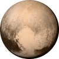

Pluto
Pluto is the Ninth planet from the Sun in Your Solar System. Demoted as a planet to what is called a dwarf planet, Pluto is normally not considered the ninth planet any longer.There are those, though, who say that Pluto was and forever will be a planet. Smaller than Earth's moon, Pluto has blue skies, spinning moons and high mountains with snow - but the snow is red. If you look closely at the images, you will see a heart-shape that is a glacier. Pluto has five moons.